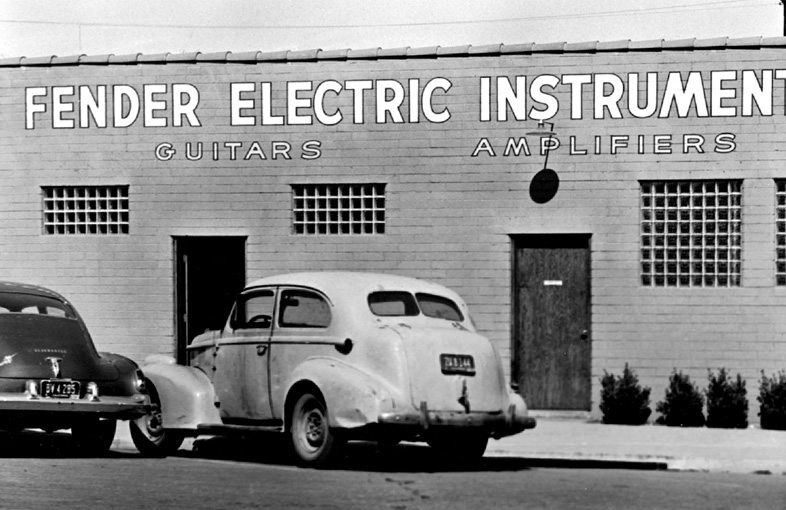

Fender Musical Instruments Corporation is the world’s foremost manufacturer of guitars, basses, amplifiers and related equipment.
With an illustrious history dating back to 1946, Fender has touched and transformed music worldwide and in nearly every genre: rock ‘n’ roll, country and western, jazz, rhythm and blues, and many others. Everyone from beginners and hobbyists to the world’s most acclaimed artists and performers have used Fender instruments and amps, and legendary Fender instruments such as the Telecaster® and Stratocaster® guitars and Precision® and Jazz® bass guitars are universally acclaimed as design classics.
In the 1940s, southern California inventor Leo Fender realized that he could improve on the amplified hollow-body instruments of the day by using an innovative and rather simple solid-body electric guitar design. Further, he realized that he could streamline the process of building them.
In 1951 he introduced a prototype solid-body instrument that would eventually be called the Telecaster® guitar. The Tele®, as it was often called then and still is today, was the first solid-body Spanish-style electric guitar to be commercially mass-produced.
That same year, Fender introduced a revolutionary new invention—the Precision Bass guitar. It was played like a guitar and had frets so that it could be played with “precision,” and it could be amplified, thus liberating bassists from unwieldy and increasingly difficult-to-hear acoustic basses.
These two historic instruments laid the foundation for a new kind of group and a revolution in popular music—what we know today as the modern rock combo. As opposed to the “big bands” of the era, electric Fender instruments made it possible for smaller groups of musicians to get together and be heard.
The Stratocaster first appeared in 1954, incorporating many design innovations based on feedback from professional musicians, Fender staff and Leo Fender himself. Its third single-coil pickup offered more tonal possibilities, its sleekly contoured body made it more comfortable, and its double cutaway design made access to upper registers much easier.
Most important, however, was the addition of the new Fender vibrato (or “tremolo”) bridge, an innovation originally intended to let guitarists bend strings, thus achieving the pedal steel-like sound so popular among country music artists of the day.
Nobody could have foreseen then how the Stratocaster would go on to revolutionize popular music. Essentially unchanged since its 1954 debut, it is the most popular and influential electric guitar ever, and players at all levels and in all genres continue to rely on its sound, playability and versatility to this day.
Leo Fender himself remained an immensely creative force over the next decade, introducing many classic instrument and amplifier designs, including the Jazz Bass® guitar, the Jaguar® and Jazzmaster® guitars and the Twin Reverb® amplifier.
Because of poor health, Leo Fender sold the company to CBS in 1965. Fender Musical Instruments experienced tremendous growth over the next 20 years, but a lack of commitment and real understanding of music and musicians by CBS gradually became apparent.
To “re-invent” Fender, CBS recruited new management in 1981. William Schultz became company president, supported by associate William Mendello. Their 5-year business plan was based on increasing Fender’s marketplace presence with dramatic quality improvement and greater commitment to research and development.
When CBS shed its non-broadcast media businesses in the 1980s, a group of employees and investors led by Schultz bought Fender from CBS in 1985. The sale put the Fender name back into the hands of a small group of dedicated people committed to creating the world’s best guitars and amplifiers.
The new Fender Musical Instruments Corporation (FMIC) had to start from scratch—there were no buildings or machinery included in the sale. Among other things, FMIC purchased the name, intellectual property and some leftover parts. Supported by a core group of loyal employees, dealers and suppliers (some of whom had been with the company since Leo Fender founded it), Schultz and his colleagues set out to rebuild an American icon.
The new Fender initially imported its guitars from offshore manufacturers with proven ability to produce affordable and viable instruments, but the move toward greater quality control soon led to the establishment in 1985 of Fender’s flagship U.S. factory in Corona, Calif. A second modern manufacturing facility opened in 1987 in Ensenada, Mexico.
Also in 1987, the renowned Fender Custom Shop opened at the Corona facility, creating dream instruments for professional guitarists and guitar enthusiasts. Fender had always recognized the importance of an open-door policy for professional musicians, accommodating their requests for specific features on an individual basis. The Fender Custom Shop has since become known worldwide and industry-wide as the pinnacle of craftsmanship and sheer instrumental artistry.
FMIC moved its corporate headquarters from Corona to Scottsdale, Ariz., in 1991. From there, Fender coordinates its administration, marketing, advertising, sales and export operations in the United States and its international satellite facilities in England, France, Germany, Japan, Mexico, the Netherlands, Spain and Sweden. Schultz retired in 2005, and Mendello became CEO.
Since its founding, FMIC has grown to be one of the world's leading marketers, manufacturers, and distributors of musical instruments. It manufactures and distributes everything guitarists and bassists need, from instruments, amplifiers, strings and accessories to professional audio products. Fender became one of the world leaders by defining the sounds we hear, by meeting the needs of musicians, by creating quality products and by backing them up with service and stability. As FMIC forges into the 21st century, its management strives to maintain Fender’s status through a combination of business acumen and love for music.
Corporate headquarters is located in Scottsdale, Ariz., U.S.A., with manufacturing headquarters and the Fender Custom Shop in Corona, Calif. FMIC markets using the brand names Fender®, Squier®, Charvel®, Gretsch®, Jackson®, and EVH®.